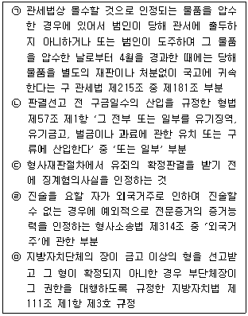
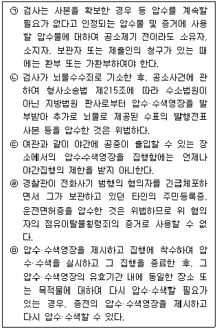
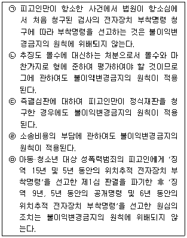
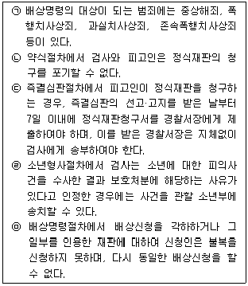

경찰공무원(순경)-형사소송법 (2012-02-25 기출문제)
1. 진술거부권에 관한 다음 설명 중 가장 적절하지 않은 것은? (다툼이 있는 경우 판례에 의함)
- 재판장은 피고인에 대한 인정신문 이전에 피고인에게 진술거부권이 있음을 고지해야 하므로 피고인은 재판장의 인정신문에 대하여도 진술거부권을 행사할 수 있다.
- 진술거부권의 행사가 피고인에게 보장된 방어권 행사의 범위를 넘어 객관적이고 명백한 증거가 있음에도 진실의 발견을 적극적으로 숨기거나 법원을 오도하려는 시도에 기인한 경우에는 가중적 양형의 조건으로 참작될 수 있다.
- 피의자에 대한 진술거부권 고지는 피의자의 진술거부권을 실효적으로 보장하여 진술이 강요되는 것을 막기 위해 인정되는 것이므로, 수사기관이 조사대상자에 대한 범죄혐의를 인정하여 수사를 개시하는 행위를 하기 전이라 하더라도 그 조사대상자에게 진술거부권을 고지하지 않았다면 이에 따라 이루어진 진술에 대해서는 증거능력을 부정하여야 한다.
- 변호인이 적극적으로 피고인 또는 피의자로 하여금 허위진술을 하도록 하는 것이 아니라 단순히 헌법상 권리인 진술거부권이 있음을 알려 주고 그 행사를 권고하는 것은 변호사로서의 진실의무에 위배되는 것이 아니다.
(정답률: 알수없음)

2. 다음 중 판례에 따를 때 무죄추정원칙의 위반을 인정한 것은 모두 몇 개인가?

- 2개
- 3개
- 4개
- 5개
(정답률: 알수없음)
3. 변호인에 관한 다음 설명 중 가장 적절하지 않은 것은? (다툼이 있는 경우 판례에 의함)
- 필요적 변호사건의 공판절차가 사선변호인과 국선변호인이 모두 불출석한 채 개정되어 국선변호인 선정 취소 결정이 고지된 후 변호인 없이 피해자에 대한 증인신문 등 심리가 이루어진 경우, 그와 같은 위법한 공판절차에서 이루어진 피해자에 대한 증인신문 등 일체의 소송행위가 모두 무효라고 볼 수는 없다.
- 필요적 변호사건에서 피고인이 재판거부의 의사표시 후 재판장의 허가 없이 퇴정하고, 변호인마저 이에 동조하여 퇴정해 버린 것은 피고인 측의 방어권 남용 내지 변호권의 포기이므로 수소법원은 피고인이나 변호인 없이 심리·판결할 수 있다.
- 형사소송에 있어서 변호인을 선임할 수 있는 자는 피고인 및 피의자와 형사소송법 제30조 제2항에 규정된 자에 한정되는 것이고, 피고인 및 피의자로부터 그 선임권을 위임받은 자가 피고인이나 피의자를 대리하여 변호인을 선임할 수는 없는 것이다.
- 항소법원이 국선변호인 선정 이후 병합된 사건에 관하여 국선변호인에게 소송기록 접수통지를 하지 아니함으로써 항소이유서 제출기회를 주지 않은 채 판결선고한 것은 위법이다.
(정답률: 알수없음)
4. 소송조건에 관한 다음 설명 중 가장 적절하지 않은 것은? (다툼이 있는 경우 판례에 의함)
- 친고죄에 있어서의 고소의 존부는 소송법적 사실로서 자유로운 증명으로 족하다.
- 공소제기시에 공소사실이 친고죄임을 알면서도 고소 없이 공소를 제기한 경우에는 고소의 추완을 인정할 수 없지만, 비친고죄로 공소제기된 사건이 심리결과 친고죄로 판명된 때에는 검사의 공소제기에 비난할 점이 없어 고소의 추완을 인정할 수 있다.
- 공소장이 변경된 경우에는 변경된 공소사실을 기준으로 소송조건의 존부를 판단하여야 하며, 다만 변경된 공소사실의 공소시효완성 여부는 공소장변경시가 아니라 당초의 공소제기가 있었던 시점을 기준으로 판단해야 한다.
- 토지관할권은 당사자의 신청을 기다려 법원이 조사하는 상대적 소송조건이다.
(정답률: 알수없음)
5. 고소에 관한 다음 설명 중 가장 적절하지 않은 것은? (다툼이 있는 경우 판례에 의함)
- 범죄피해자의 고소권은 형사절차상의 법적인 권리에 불과하므로 원칙적으로 입법자가 그 나라의 고유한 사법문화와 윤리관, 문화전통을 고려하여 합목적적으로 결정할 수 있는 넓은 입법형성권을 갖는다.
- 형사소송법 제230조 제1항 본문은 '친고죄에 대하여는 범인을 알게 된 날로부터 6월을 경과하면 고소하지 못한다'고 규정하고 있는 바, 여기서 범인을 알게 된다 함은 통상인의 입장에서 보아 고소권자가 고소를 할 수 있을 정도로 범죄사실과 범인을 아는 것을 의미하나, 범죄사실을 안다는 것이 고소권자가 친고죄에 해당하는 범죄의 피해가 있었다는 사실관계에 관하여 확정적인 인식이 있음을 말하는 것은 아니다.
- 범행기간을 특정하고 있는 고소에 있어서는 그 기간 중의 어느 특정범죄에 대하여 범인의 처벌을 원치 않는 고소인의 의사가 있다고 볼 만한 특별한 사정이 없는 이상 그 고소는 특정한 기간 중에 저지른 모든 범죄에 대하여 범인의 처벌을 구하는 의사표시라고 봄이 상당하다.
- 수사기관이 고소권자를 참고인으로 신문한 경우, 그 진술에 범인의 처벌을 요구하는 의사표시가 포함되어 있고, 그 의사표시가 조서에 기재되었을 때에는 적법하게 고소가 이루어진 것으로 인정된다.
(정답률: 알수없음)
6. 피의자신문에 관한 다음 설명 중 가장 적절한 것은? (다툼이 있는 경우 판례에 의함)
- 피의자신문이 임의수사인가 또는 강제수사인가에 대해서는 견해의 대립이 있으나, 판례는 피의자가 수사기관의 출석요구에 응하지 않는 경우 영장에 의한 체포가 가능하다는 이유로 강제수사로 보고 있다.
- 피의자신문에 참여하고자 하는 변호인이 2인 이상인 때에는 피의자가 신문에 참여할 변호인 1인을 지정하고, 지정이 없는 경우에는 검사 또는 사법경찰관이 이를 지정하여야 한다.
- 피의자신문에 참여한 변호인은 신문 후 의견을 진술할 수 있다. 다만, 신문 중이라도 부당한 신문방법에 대하여 이의를 제기할 수 있고, 검사 또는 사법경찰관의 승인을 얻어 의견을 진술할 수 있다.
- 검사가 국가보안법 위반죄로 구속영장을 발부받아 피의자신문을 한 다음, 구속 기소한 후 다시 피의자를 소환하여 공범들과의 조직구성 등에 관한 신문을 하면서 피의자신문조서가 아닌 일반적인 진술조서의 형식으로 조서를 작성하였다면 진술거부권을 고지하지 않았더라도 위법이 아니다.
(정답률: 알수없음)
7. 영상녹화에 관한 다음 설명 중 가장 적절한 것은?
- 영상녹화가 완료된 이후 피의자가 영상녹화물의 내용에 대하여 이의를 진술하는 때에는 그 진술을 따로 영상녹화하여 첨부하여야 한다.
- 피고인 또는 피고인 아닌 자의 진술을 내용으로 하는 영상녹화물은 공판준비 또는 공판기일에 피고인 또는 피고인이 아닌 자가 진술함에 있어서 기억이 명백하지 않은 사항에 관하여 기억을 환기시켜야 할 필요가 있다고 인정되는 때에 한하여 검사 및 피고인에게 재생하여 시청하게 할 수 있다.
- 수사기관이 미성년자인 피의자의 진술을 영상녹화할 경우에는 형사소송법상 변호인의 동의를 얻어야 한다.
- 검사 작성 피의자신문조서와 참고인진술조서, 경찰 작성 참고인진술조서에 있어서 진술한 내용과 동일하게 기재되어 있다는 실질적 진정성립은 영상녹화물 기타 객관적 방법에 의해 증명할 수 있다.
(정답률: 알수없음)
8. 체포·구속적부심사제도에 관한 다음 설명 중 가장 적절하지 않은 것은? (다툼이 있는 경우 판례에 의함)
- 체포영장에 의해 체포되지 않은 피의자도 체포적부심사청구를 할 수 있다.
- 체포·구속적부심사청구 후 검사의 공소제기가 있더라도 법원은 석방결정을 내릴 수 있다.
- 법원은 체포·구속적부심사청구가 있는 경우 피의자의 출석을 보증할 만한 보증금의 납입을 조건으로 석방을 명할 수 있다.
- 법원의 보증금납입조건부 석방결정에 대하여는 항고할 수 있다.
(정답률: 알수없음)
9. 압수ㆍ수색에 관한 다음 설명 중 옳은 것은 모두 몇 개인가? (다툼이 있는 경우 판례에 의함)

- 1개
- 2개
- 3개
- 4개
(정답률: 알수없음)
10. 현행법상 검사의 불기소처분에 대한 불복방법에 관한 다음 설명 중 가장 적절하지 않은 것은? (다툼이 있는 경우 판례에 의함)
- 불기소처분이 위법·부당할지라도 불기소처분 당시에 공소시효가 완성되어 공소권이 없는 경우에는 위 불기소처분에 대한 재정신청은 허용되지 않는다.
- 고등법원에 재정신청을 하기 위해서는 검찰항고전치주의에 따라 먼저 검찰청법 제10조에 의한 검찰항고를 거쳐야 하는 것이 원칙이지만, 검사가 공소시효 만료일 30일 전까지 공소를 제기하지 않은 경우에는 검찰항고 없이 곧바로 재정신청을 할 수 있다.
- 고등법원의 공소제기결정에는 공소제기를 강제하는 효과가 있어 검사와 피의자는 이에 대하여 불복할 수 없으며, 공소시효에 관하여는 공소제기결정이 있는 날에 공소가 제기된 것으로 본다.
- 헌법소원의 보충성에 따라 고소인은 검사의 불기소처분에 대하여 재정신청을 거쳐 헌법재판소에 헌법소원을 청구할 수 있다.
(정답률: 알수없음)
11. 공소제기의 효과에 관한 다음 설명 중 가장 적절하지 않은 것은? (다툼이 있는 경우 판례에 의함)
- 공소제기에 의해 사건은 법원에 계속되고, 공소시효 진행이 정지되며 법원의 심판범위가 한정된다.
- 법원의 심판범위는 공소장에 기재된 공소사실에 제한되며, 공소사실과 동일성이 인정되는 사실도 공소장변경에 의하여 비로소 법원의 현실적인 심판의 대상이 된다.
- 공소장에는 甲이 피고인으로 기재되어 있음에도 불구하고 乙이 출석하여 재판을 받은 경우에 甲은 형식적 피고인, 乙은 검사가 지정한 피고인 이외의 자가 소송에 관여한 실질적 피고인이 되며, 이 경우에도 공소제기의 효력은 甲에게만 미친다.
- 공소제기 후에 진범인이 발견되어도 공소제기의 효력은 진범인에게 미치지 아니하며, 공범 중 1인에 대한 공소제기가 있어도 다른 공범자에 대하여는 그 효력이 미치지 않는다. 다만 공소제기로 인한 공소시효정지의 효력은 다른 공범자에게도 미친다.
(정답률: 알수없음)
12. 공판절차의 기본원칙에 관한 다음 설명 중 가장 적절하지 않은 것은? (다툼이 있는 경우 판례에 의함)
- 증인신문에서의 교호신문제도는 형사소송법에 규정된 구두변론주의의 제도적 표현의 하나이다.
- 공개주의에 따라 재판의 심리와 판결은 공개해야 하나, 국가의 안전보장·안녕질서 또는 선량한 풍속을 해할 우려가 있는 때에는 결정으로 재판의 심리와 판결을 공개하지 아니할 수 있다.
- 집중심리주의에 따라 심리에 2일 이상이 필요한 경우에는 부득이한 사정이 없는 한 매일 계속 개정하여야 한다.
- 실질적 직접심리주의에 따라 법관의 면전에서 직접 조사한 증거만을 재판의 기초로 삼을 수 있고, 증명 대상이 되는 사실과 가장 가까운 원본 증거를 재판의 기초로 삼아야 하며, 원본 증거의 대체물 사용은 원칙적으로 허용되어서는 안된다.
(정답률: 알수없음)
13. 공소장 변경에 관한 다음 설명 중 가장 적절하지 않은 것은? (다툼이 있는 경우 판례에 의함)
- 포괄일죄의 경우 공소장변경 허가 여부를 결정함에 있어서는 포괄일죄를 구성하는 개개 공소사실 별로 종전 것과의 동일성 여부를 따지기 보다는 변경된 공소사실이 전체적으로 포괄일죄의 범주 내에 있는지 여부에 초점을 맞추어야 한다.
- 강간치상으로 공소가 제기되었다고 하더라도 준강제추행죄는 강간치상죄의 공소사실과 동일성이 인정되고 공소제기된 범죄사실에 포함되어 충분히 심리되었으므로 별도의 공소장변경 절차 없이 준강제추행죄를 인정할 수 있다.
- 미성년자약취 후 재물을 요구하였으나 취득하지는 못한 범인을 '미성년자약취 후 재물취득 미수'에 의한 특정범죄가중처벌등에관한법률 위반죄로 공소제기 하였는데, 법원이 공소장변경 없이 '미성년자약취 후 재물요구 기수'에 의한 같은 법 위반죄로 인정하여 미수감경을 배제하는 것은 피고인의 방어권 행사에 실질적인 불이익을 초래하는 것이다.
- 폭행치상죄를 폭행죄로 변경하려면 축소사실의 인정에 해당하므로 공소장변경을 요하지 않는다.
(정답률: 알수없음)
14. 위법수집증거에 관한 다음 설명 중 가장 적절하지 않은 것은? (다툼이 있는 경우 판례에 의함)
- 검찰관이 피고인을 뇌물수수 혐의로 기소한 후 형사사법공조절차를 거치지 않은 채 외국에 현지출장하여 그 곳에서 뇌물공여자를 상대로 작성한 참고인진술조서는 위법수집증거에 해당하지 않는다.
- 수사기관이 적법절차를 위반하여 지문채취 대상물을 압수한 경우 그 전에 이미 범행 현장에서 위 대상물에서 채취한 지문은 독수독과의 원칙에 따라 위법수집증거에 해당한다.
- 제3자가 공갈목적을 숨기고 피고인의 동의하에 나체사진을 찍은 경우, 이 사진의 존재만으로 피고인의 인격권과 초상권이 침해된다고 볼 수 없고, 이 사진이 범죄현장의 사진으로 피고인에 대한 간통죄의 형사소추를 위해 반드시 필요한 증거라고 인정될 경우 위법수집증거로 볼 수 없다.
- 강도 현행범으로 체포된 피고인에게 진술거부권 고지 없이 강도 범행에 대한 자백을 받은 후 40여일이 지난 후에 피고인이 변호인의 충분한 조력을 받으면서 법정에서 임의로 자백한 경우, 법정에서의 자백은 위법수집증거라 할 수 없다.
(정답률: 알수없음)
15. 다음 중 당연히 증거능력이 인정되는 증거로서 가장 적절하지 않은 것은? (다툼이 있는 경우 판례에 의함)
- 육군과학수사연구소 실험분석관이 작성한 감정서
- 법원의 구속적부심문조서
- 성매매업소에서 영업상 작성한 성매매 상대방에 관한 메모리카드의 내용
- 일본하관 세관서 통괄심리관 작성의 범칙물건감정서등본과 분석의뢰서
(정답률: 알수없음)
16. 자백의 보강법칙에 관한 다음 설명 중 가장 적절하지 않은 것은? (다툼이 있는 경우 판례에 의함)
- 자백에 대한 보강증거는 범죄사실의 전부 또는 중요 부분을 인정할 수 있는 정도가 되지 아니하더라도 피고인의 자백이 가공적인 것이 아닌 진실한 것임을 인정할 수 있는 정도만 되면 족할 뿐만 아니라 직접증거가 아닌 간접증거나 정황증거도 보강증거가 될 수 있다.
- 자백의 보강법칙은 자유심증주의의 예외가 되나 소년보호사건이나 즉결심판에는 적용되지 않는다. 하지만 형사사건인 이상 간이공판절차 및 약식명령절차에는 자백의 보강법칙이 적용된다.
- 2월 18일 1시 35분경 자동차를 타고 온 피고인으로부터 필로폰을 건네받은 후 피고인이 위 차량을 운전해 갔다고 한 진술과 이틀 후인 같은 해 2월 20일 피고인의 소변에서 나온 필로폰 양성 반응은 피고인이 2월 18일 2시경 필로폰 투약으로 정상적으로 운전하지 못할 우려가 있는 상태에 있었다는 공소사실 부분에 대한 자백을 보강하는 증거가 된다.
- 피고인이 7건의 절도행위를 한 것으로 기소된 경우, 그 중 4건은 범행장소인 구체적 호수가 특정되지 않았을 때, 위 4건에 관한 피고인의 범행 관련 진술이 매우 사실적이고 구체적이며 진술의 신빙성을 의심할 만한 사유도 없어 자백의 진실성이 인정된다 하더라도, 피고인의 집에서 해당 피해품을 압수한 압수조서와 압수물 사진은 위 자백에 대한 보강증거가 될 수 없다.
(정답률: 알수없음)
17. 불이익변경금지의 원칙에 관한 다음 설명 중 옳은 것은 모두 몇 개인가? (다툼이 있는 경우 판례에 의함)

- 2개
- 3개
- 4개
- 5개
(정답률: 알수없음)
18. 파기판결의 기속력(구속력)에 관한 다음 설명 중 가장 적절하지 않은 것은? (다툼이 있는 경우 판례에 의함)
- 파기판결의 기속력은 하급심 뿐 아니라 파기판결을 한 상급심에도 미친다고 해석된다.
- 상고심으로부터 사건을 환송받은 법원은 그 사건을 재판함에 있어서 상고법원이 파기이유로 한 사실상 및 법률상의 판단에 대하여 환송 후의 심리과정에서 새로운 증거가 제시되어 기속적 판단의 기초가 된 증거관계에 변동이 생기지 않는 한 이에 기속된다.
- 몰수형 부분의 위법을 이유로 원심판결 전부가 파기환송되었다면 환송 후 원심이 주형을 변경하는 것은 환송판결의 기속력에 저촉된다.
- 파기판결의 구속력은 파기의 직접적 이유가 된 원심판결에 대한 소극적인 부정판단에 한하여 생긴다.
(정답률: 알수없음)
19. 특별형사절차에 관한 다음 설명 중 옳은 것은 모두 몇 개인가?

- 1개
- 2개
- 3개
- 4개
(정답률: 알수없음)
20. 형사보상에 관한 다음 설명 중 가장 적절하지 않은 것은?
- 구금에 대한 보상을 할 때에는 그 구금일수에 따라 1일당 보상청구의 원인이 발생한 연도의 최저임금법에 따른 일급 최저임금액 이상 대통령령으로 정하는 금액 이하의 비율에 의한 보상금을 지급한다.
- 치료감호법 제7조에 따라 치료감호의 독립 청구를 받은 피치료감호청구인의 치료감호사건이 범죄로 되지 아니하거나 범죄사실의 증명이 없는 때에 해당되어 청구기각의 판결을 받아 확정된 경우에도 국가에 대하여 구금에 대한 보상을 청구할 수 있다.
- 보상의 청구가 이유 있을 때에는 보상결정을 하여야 하고, 그 보상결정에 대하여는 1주일 이내에 즉시항고를 할 수 있다.
- 피고인의 보상청구는 무죄재판이 확정된 때부터 3년 이내에 하여야 한다.
(정답률: 알수없음)